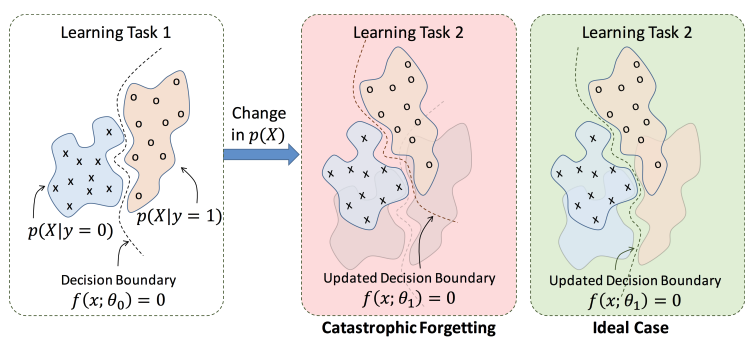

Sleep protects memories from catastrophic forgetting
The initial inspiration for artificial neural networks (AANs) comes from the structure and
connectivity of the biological neural networks. The original implementation of the AANs
loosely models the biological neurons. Two different research approaches deviate from that
point. The first approach is to build more efficient neural networks that will solve practical
problems. Recurrent neural networks demonstrated a significant step forward in ANN performance,
however, methods used to train these recurrent models are not biologically plausible. The second
approach is biologically inspired. Examples from this approach are spiking neural networks
(biologically realistic models of neurons to carry out computation), long-short term memory
(LSTM), and attention building blocks.
A theoretical group from UCSD lead by Prof. Maxim Bazhenov went further mimicking not only the
biological blocks but also biological processes. One of the purposes of our sleep is to consolidate
daily acquired memories. They asked if by mimicking the sleep process in the neural network, the
ANNs can be trained to perform multiple tasks and not suffer from catastrophic forgetting. Catastrophic
forgetting is an inability of the network to learn knowledge without forgetting the previous one.
It happens because new training likely overrides the old synaptic weights (Figure 1).

Figure 1: Concept of catastrophic forgetting. Source: Attention-Based Selective Plasticity
(Kolouri et al., 2019)
The previous approach to allow the neural network to remembers old tasks was achieved by selectively
slowing down learning on the most contributing synaptic weights for those tasks by introducing punishment
via quadratic penalties to the loss function [1]. Bazhenov's group approach was motivated by the
importance of sleep in learning and memory. They hypothesized that simulating sleep after learning will
reverse the forgetting and enhance both old and new memories. Inspired by the processes involved in
sleep generation in biological networks, the group developed an algorithm that implements a sleep-like
phase in neural networks. They demonstrated that "sleep" can recover older tasks that were otherwise
forgotten [2].
Gonzalez and colleagues developed a network model of memory encoding in a thalamocortical network.
They compared two different scenarios:
1. Training on Task A -> Training on Task B
2. Training on Task A -> Sleeping ->Training on Task B
They found that implementation of a sleep-like phase in ANNs reduces catastrophic forgetting and
transfer of knowledge. They demonstrated that sleep creates unique representations of each class of
inputs and that relevant neurons fire during sleep, simulating the replay of previously learned
memories. Interestingly, while the previous study [1] forced the synaptic weights to stay the same
by introducing punishment, Gonzalez and colleagues observed that sleep replay changed the synaptic
footprint of the old memory to allow overlapping neuronal populations to store multiple memories.
To summarize, we compared neural activity in the mouse olfactory bulb with odor
intensity perception in humans. We found the two to be consistent. Odor responses changed with decreasing
concentration and repeated sampling of a constant odor source in similar ways. Using a classifier, we found
that the odor concentration coded on later sniffs was sharply lower than on the first sniff. These neural
results were consistent with the sharp sniff to sniff drop in odor intensity reported by human volunteers.
Our data suggest that responses of neurons in the olfactory bulb are consistent with odor intensity perception.